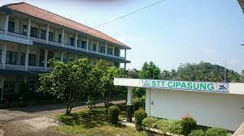

Sejarah STT CIPASUNG

Tahun Berdiri
Sekolah Tinggi Teknologi Cipasung (STT Cipasung) didirikan tahun 1997 dengan bantuan dan arahan dari tim Institut Teknologi Bandung.
Baca selengkapnyaSekolah Tinggi Teknologi Cipasung (STT Cipasung) didirikan tahun 1997 dengan bantuan dan arahan dari tim Institut Teknologi Bandung.
Baca selengkapnya